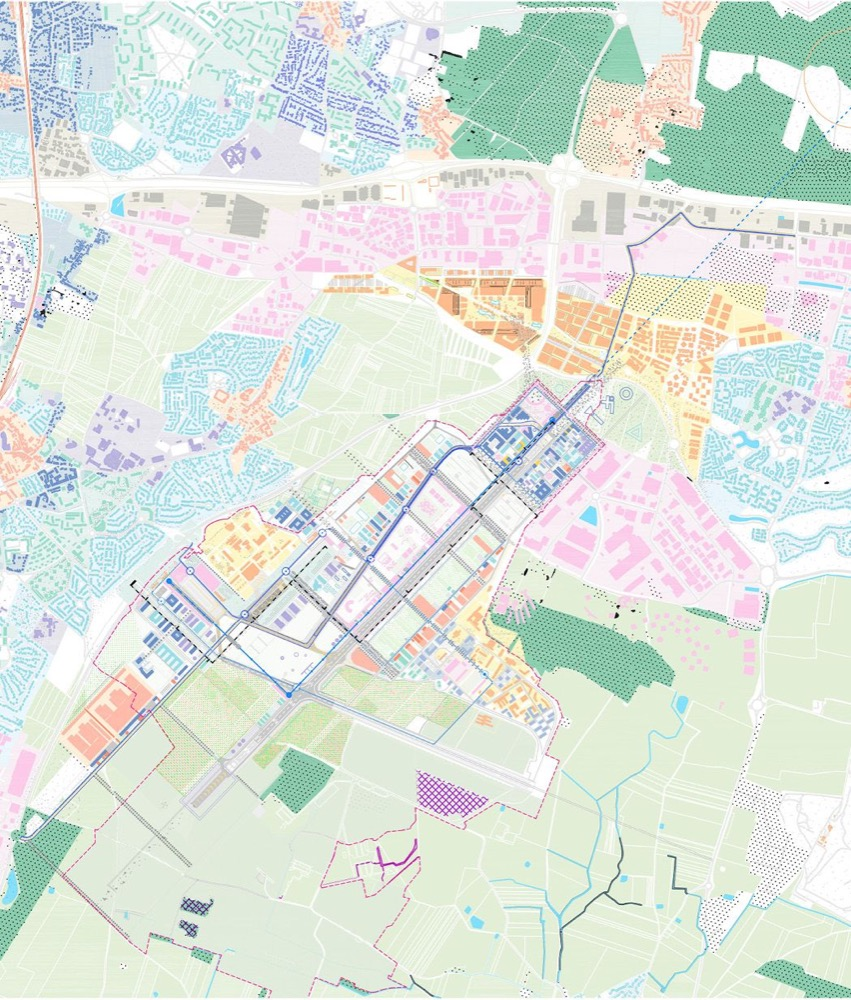

MORPH-UI · PALETTE DECK · V2 · SAMPLED FROM THE MAP
配色，重新取一次
whisper pastels on sage paper — ink only draws lines
↑ 真实占比：底色一大片，pastel 一小截，饱和色只有一条缝
01 / 08
SEC.01 · EVIDENCE
取色依据sampled, not guessed
对 地图-最终配色灵感.jpg 做像素级采样后的三个事实：

① 底色不是暖米黄。占比最高的是灰鼠尾草米 #ECEBDC · 17% 和白 #F8F8F8——整体偏冷、偏灰。
② 所有色块都掺了大量白。粉是雾粉、蓝是粉蓝、黄是蜜黄薄雾——没有一个颜色是"实"的。唯一例外：玉绿 #8FC7A6 · 4.6%，全图唯一的中饱和面积色。
③ 饱和色近乎不存在。钴蓝 / 品红 / 松墨绿 / 陶土在百万像素里只占 <0.5%——它们只画线、只描边、只盖章。
病因 上一版的柠檬黄 #F6EDA9、马尼拉 #E8D9B0、牛皮 #D8CBB4 是三个又暖又浊的黄，原图里根本不存在 → 土。全部废除。
02 / 08
SEC.02 · LAYER 1 — 底 · 占画面 ≈ 55%
纸的底色the paper itself
桌面与纸张只用这三个：冷灰调，绝不偏黄。任何组件的第一笔永远是它们。
鼠尾草米 Sage
#ECEBDC
桌面、Folder 外壳（原马尼拉黄→退役）
雾灰 Mist
#E3E3E0
次级底、阴影面、disabled
03 / 08
SEC.03 · LAYER 2 — 雾感色块 · 占画面 ≈ 40%
Whisper Pastelsblocks, never walls
全部是"掺足了白"的雾感色。一屏最多同时出现 3 个；玉绿是唯一允许稍微用力的面积色。
04 / 08
SEC.04 · LAYER 3 — 笔迹 · 占画面 < 5%
只画线的颜色ink draws, never fills
四支笔 + 一瓶正文墨。它们出现在：路线、虚线边界、印章、勾划、下划线。永远不做背景填充。
钴蓝 Cobalt
#2F62C4
主路线、链接、AI 边框
品红 Magenta
#C43B8C
虚线边界、印章、勾选笔迹
陶土 Terracotta
#C96F4A
警示描边、撕裂线
正文 Aa 永不纯黑
墨青 Ink
#3A4656
所有文字
DON'T 拿这五个颜色填任何底 —— 它们一旦成为色块，整套系统立刻现代化、立刻脏。
05 / 08
SEC.05 · RATIO
55 / 40 / 5the only rule that matters
上一版丑，不是色卡不对，是比例不对：我让 pastel 平铺当了主角。正确的画面里，主角永远是纸。
底 55% · 纸白/鼠尾草
mint
powder
blossom
jade
55% 底
桌面、壳、纸面。看起来"什么都没做"的部分，就是质感本身。
40% 雾 pastel
色块、票纸、区块填充。同屏 ≤3 色，同色系可用深浅两档。
5% 笔迹
线、虚线、章、勾。饱和度全靠这 5% 提神——多一分就俗。
06 / 08
SEC.06 · COMBOS
成组使用one day, one family
跨组件呼应：一天一个色族（底 pastel + 同族深一档 + 一支笔）。地图路线、POI 卡、票根、收据分区共用同一族。
DAY 1 · 海线
纸白 + 粉蓝/长春花 + 钴蓝笔
DAY 2 · 山线
纸白 + 淡薄荷/玉绿 + 松墨笔
DAY 3 · 老城线
纸白 + 雾粉/玫粉 + 品红笔
BUDGET / 警示
纸白 + 蜜黄/杏橘 + 陶土笔
收据不再整张黄——白纸 + 蜜黄分区条
OK 每组内永远：4 份白 + 2 份雾 pastel + 1 根线。薰衣草 #CDC9E6 只做全局第 4 顺位点缀，不进任何 Day 族。
07 / 08
SEC.07 · BEFORE / AFTER
为什么之前土and the fix
BEFORE
① 三个浊黄（马尼拉/柠檬/牛皮）压住全场，画面发暖发闷
② 六色并列平铺、无主次，pastel 当了主角
③ 色块全部"实心"，没有原图的雾感
AFTER
① 浊黄全废，底色换冷灰调鼠尾草米
② 55/40/5 比例铁律，白永远是主角
③ pastel 全部提亮掺白到"雾"级，一屏 ≤3 色
④ 饱和色回归笔迹身份，只画线
"The map isn't colorful — it's a pale city with a few confident pens."
08 / 08